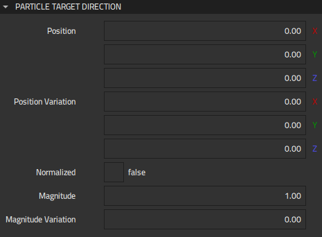
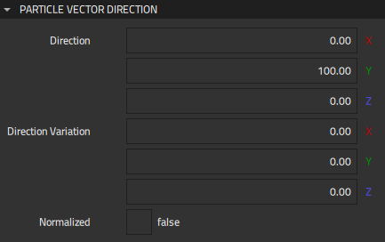

Particle Directions
Directions can be specified by specifying the emitted particle velocity towards either the target position or the target vector.
Target Direction
The Target Direction component sets emitted particle velocity towards the target position.
Specify common settings for particle target direction in Properties > Particle Target Direction.

Position specifies the position of the target of the particle. For variation in the target position, specify Position variation.
Normalized determines whether the distance to the position affects the magnitude of the particle's velocity. Enable Normalize to derive the velocity amount only from Magnitude and Magnitude variation.
Magnitude specifies the magnitude in Position change per second. A negative value accelerates the in the opposite direction from the position. When Normalized is disabled, this value is multiplied with the distance to the target position. For variation in the magnitude, specify Magnitude variation.
For example, to emit particles towards the target position (100, 0, 0) with random magnitude between 10..20, set Magnitude to 15.00 and Magnitude variation to 5.00. Further, enable Normalized.
Vector Direction
The Vector Direction component sets emitted particle velocity towards the target vector. The length of the direction vector is used as the velocity magnitude.
Specify common settings for particle vector direction in Properties > Particle Vector Direction.

Direction specifies the direction of the target of the particle. A positive Y value means up, while a negative value means down. A negative Z value causes the particles to move in the direction opposite to the target vector.
For variation in the target direction, specify Direction variation. Enable Normalized to normalize direction after applying the variation. When it is disabled, variation affects the magnitude of the particles' velocity. When it is enabled, variation affects the direction, but the magnitude is determined by the original direction length.